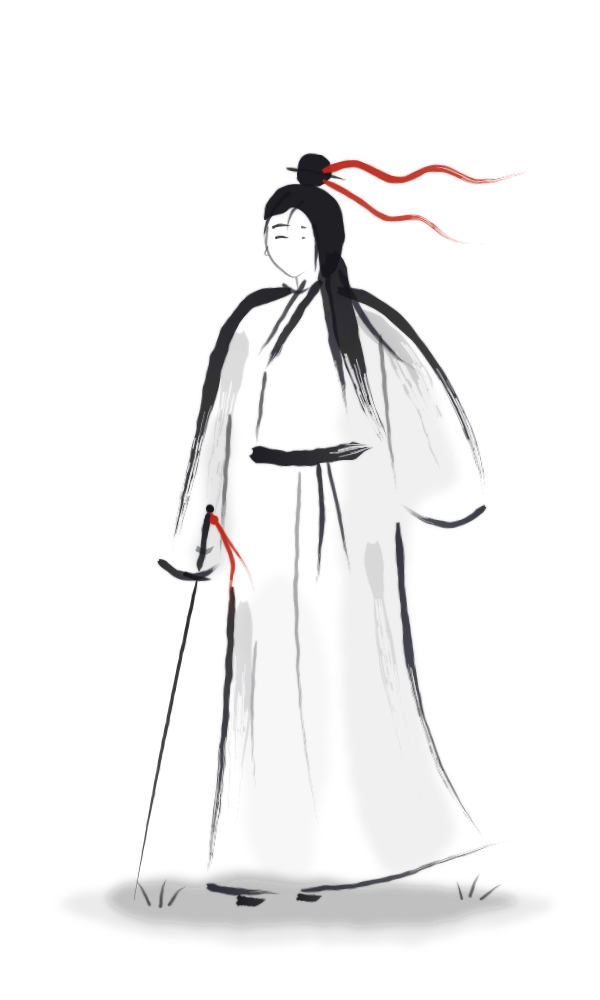
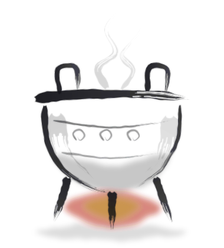

墨途 · 水墨界面套件
不画方框 · 以墨分层 · 以白为底 · 一点朱砂
色
纸 · 墨五色 · 矿物点色 · 品质
纸 paper-hi
旧纸 paper-lo
焦 .92
浓 .78
重 .58
淡 .36
清 .16
朱砂
石青
石绿
泥金
赭石
字
行书（大字）· 楷书（标题按钮）· 楷体（标签）· 黑体（小字数字）
满载而归
储物袋
破境所得
撤离点 · 断涧古传送阵
本局感悟 +204 · 13:42
竹深溪浅 · 量力而归
墨
笔
程序化生成，全部是 mask 形状，颜色随意染
stroke-1
stroke-3
stroke-band
stroke-thin
enso-1
enso-3
seal-sq2
splash-2
wash-round
cloud
纸
面板 = 一张有毛边的纸；装裱、手卷、扇面、竹简按场合选用
宣纸
.ink-paper
另一张
.alt .tilt-l
洒金笺
.sajin · 稀有内容
装裱
.ink-mount · 境界、鉴宝
聚气丹
可炼
回春丹
筑基丹
炼丹炉
二阶
炼器鼎
未建
墨晕底衬
.ink-wash · HUD 用
钮
次要＝一笔下划；主要＝浓墨一笔作底；决断＝朱印
返回
悬停
不可用
放入锦囊
主要 · 悬停
启程
悬停
突破
储物袋
行囊
法宝
炼丹
炼器
撤离点
断涧古传送阵
斩妖
34
物
圆相物品格：凡 · 灵 · 宝 · 仙 · 极；未鉴定 · 新 · 选中 · 空 · 锁
灵
87
凡
露
6
灵
竹
宝
卷
仙
仙
冥
极
极
剑
未鉴定
果
新
冰
选中
空
锁
未解锁
丹
.lg
竹
千年竹心
露
6
灵
87
卷
剑
皮
数
一笔进度条 · 圆相读条 · 计数
石
2,431
撤
离
功
成
妖
灵
药
示
浮签 · 通知 · 对话
寒露草
灵品
夜露凝于草尖，入丹可清心火。
灵值 12 · 占 1 格
拾得 · 灵石 ×12
首次发现 · 千年竹心
妖潮将起 · 速寻撤离
守阵老人
叟
此阵三百年未开，你若要走，便趁天黑之前。
HUD
压在真实画面上的样子（无框，只用墨晕托底）
气血
238 / 330
真气
74 / 165
Q
剑
E
冰
7
R
锁
1
春
立绘
界面里不出现低模 3D 人偶；用写意 2D 立绘（kit/portrait_linmo.svg，可由画师立绘同尺寸替换）


光标
kit/cursors/ · 墨色主体 + 纸色描边，白地与墨块上都清楚
默认
界面悬停
可交互
敌人
不可用
瞄准·金
瞄准·水
瞄准·火
技能预览
地面上的范围、落点、扇形、弹道：低饱和五行色 + 毛边 + 淡晕，压在白纸地面与墨块上都可辨
施法范围
淡墨虚圆 α .45 + 纸色外描 · 不填色
落点 AoE
五行色墨晕 α .08→.32 · 一笔圆相边 α .85
扇形 / 直线
同色淡填 α .06–.3 · 2px 毛边描线
弹道
点状虚笔 3/6 · 终点箭头一笔
不可施放
一律退成淡墨 + 一道斜笔，不用红色
渲染层
画在水墨后处理之后（或排除描边/抖动）